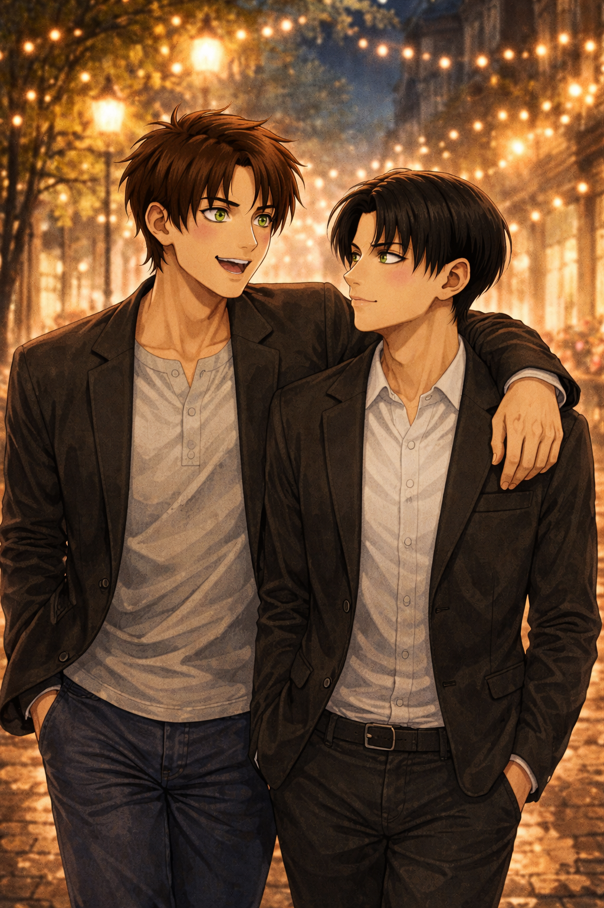

Still 23
Levi — POV

Levi woke up before him on purpose. Not because he couldn’t sleep. Not because he was restless, but because he wanted the first quiet moment of the day to belong to him.
He rolled onto his side and watched Eren breathe.
There was something deeply unfair about how the world insisted on counting years when Eren still looked like sunlight caught in a body.
Hair everywhere. Brows slightly knit even in sleep. One hand curled toward Levi like instinct.
Levi brushed his thumb across Eren’s knuckles.
“You’re older today,” he murmured softly.
Eren groaned without opening his eyes.
“No I’m not.”
“Yes, you are.”
“In my head I’m still twenty-three.”
Levi smiled.
“You are not.”
“I am,” Eren insisted, eyes finally cracking open. “And everyone knows it. People meet me and they go, ‘Ah yes. Twenty-three.’ It’s unfair.”
“It is not unfair.”
“It is. I refuse to age past twenty-three mentally.”
Levi leaned closer.
“That explains a lot.”
Eren squinted at him.
“Rude. It explains nothing. I’m mature.”
“Mature,” Levi repeated calmly.
“Yes. Extremely.”
“So because you’re mature,” Levi continued, voice deliberately neutral, “you won’t want a hug this morning, right? No kisses, either.”
Eren’s expression changed instantly.
“Excuse me?”
“You said you were mature.”
“Mature doesn’t mean emotionally unavailable,” Eren shot back. “I can be evolved and still require physical affection.”
“Require?”
“Yes. Immediately.”
Levi didn’t answer immediately. He moved instead. One arm slipped around Eren’s waist, pulling him closer — firm, steady and undeniable. His other hand came up to cradle the back of Eren’s head.
“Happy birthday,” he murmured.
And then he kissed him.
Not once.
Small. Soft. Quick.
The corner of his mouth.
His cheek.
The tip of his nose.
His forehead.
One more against his lips — barely there, warm and careful.
Popcorn kisses. Scattered. Intentional.
“You are older,” he said quietly. “And that’s not a tragedy.”
Eren looked at him more seriously then.
“It feels strange.”
“Why.”
“Because I still feel like I’m at the beginning of everything.”
Levi’s expression softened in a way he rarely allowed.
“You are.”
Eren went quiet at that. Not defensive. Not dramatic. Just thoughtful.
He rolled onto his back and stared at the ceiling.
“It’s weird,” he admitted. “Everyone acts like every year is some kind of milestone. Like I’m supposed to have figured things out by now. Like I’m supposed to feel settled.”
Levi shifted closer without comment.
“And you don’t,” he said.
“No,” Eren replied. “I still want things. Big things. I still feel restless. I still feel like I’m becoming.”
Levi reached for his hand this time.
“Good.”
Eren turned his head.
“Good?”
“I don’t want you finished,” Levi said calmly. “I don’t want you settled into something small. I want you wanting.”
Eren’s throat tightened slightly.
“You make it sound like I’m some kind of ongoing project.”
“You are,” Levi replied. “And I like watching you build.”
Eren shifted closer immediately. Touch first. Always touch.
His hand slid under Levi’s shirt, warm against his waist.
“Do I look different to you?” he asked quietly.
“No.”
“Be honest.”
“I am.”
Levi leaned down slightly, brushing his nose against Eren’s temple.
“You look like my other half. Always handsome. Always the exact definition of gorgeousness.”
Eren exhaled slowly.
“And you still—”
He stopped himself.
“Still what.”
“Still look at me like I’m…”
Levi didn’t let him finish.
“Yes.”
Eren’s eyes searched his face.
“Like I’m what.”
“Like you’re exactly who I want.”
The words landed heavy. Certain.
Eren swallowed.
“Even when I’m not twenty-three anymore.”
“Especially then.”
Silence settled between them, warm instead of empty.
Eren moved first.
He pulled Levi down into him, arms wrapping tight around his shoulders, face buried into his neck.
“Okay,” he whispered. “I’ll turn twenty-four.”
“Good.”
“But in my head I’m still twenty-three.”
“That’s fine.”
“And you still love me.”
“Yes.”
Eren smiled against his skin.
“Then aging is acceptable.”
Levi allowed himself the smallest smile.
“Yes.”
He brushed his thumb once more across Eren’s jaw before pulling away.
“Okay, get dressed.”
“That sounds like a plan.”
“It is.”
Late Morning
They didn’t rush. Coffee first, the good kind. The kind that makes you slow down instead of speed up.
Eren stood too close while they waited. Fingers hooking into Levi’s belt loop absentmindedly.
“You planned something,” he said quietly.
“I thought of a day.”
“That’s vague.”
“That’s intentional.”
They walked after.
No destination in a hurry. Just streets. Sunlight. A breeze that still felt like early spring.
Eren slipped his hand into Levi’s without asking. Levi let him. Entertwined their fingers.
They always did this. Touch like punctuation. Touch like reassurance.
They stopped at a bookstore window. At a street musician. At a stall selling fresh pastries that Eren insisted they try.
“You’re very soft today,” Eren observed.
“You’re older today. It's your day.”
“That’s not a personality trait.”
“It is if you make it one.”
Eren laughed. Loud and unfiltered. Levi watched him like he always did when that happened.
Afternoon
They found a place by accident.
Not the one Levi had bookmarked. Not the one with perfect reviews.
A small restaurant tucked between a florist and a shop that sold antique maps. Windows open. White curtains moving in the breeze.
Eren stopped walking first.
“This one.”
“You don’t know if it’s good.”
“I don’t need to.”
They sat outside. Sunlight shifting across the table. Glasses of water sweating immediately in the heat.
Eren reached for Levi’s hand before the menus even arrived.
“Okay,” he said, leaning forward. “Confession.”
“That sounds dangerous.”
“I don’t actually hate birthdays.”
Levi raised an eyebrow.
“You complain every year.”
“I hate the expectations. Not the day.”
The waiter brought bread. Olive oil. Something warm and herbed.
Eren tore a piece and handed it to Levi before taking one himself.
“I just don’t like being… evaluated. Like I’m supposed to be further along. Or more certain. Or more something.”
Levi didn’t rush his answer.
“You are exactly where you are.”
Eren held his gaze.
“That’s such a Levi answer.”
“It’s accurate.”
Their food arrived.
It was better than expected. Ridiculously good, actually. Eren closed his eyes after the first bite.
“If I die today,” he said seriously, “tell them it was worth it.”
“Here goes my dramatic boy.”
“I’m emotional.”
A breeze caught Eren’s hair and pushed it across his face.
Levi reached out and brushed it back without thinking.
Eren went quiet.
“You do that,” he said softly.
“Do what.”
“Take care of me like it’s nothing.”
Levi looked at him evenly.
“It is nothing.”
Eren swallowed.
Smiled.
That.
That was better than a gift.
That was something he would remember.
Evening — The Theater
The theater lights were already glowing when they arrived.
Warm gold spilling onto the sidewalk. Posters framed in glass. The low hum of people gathering before the doors opened.
Eren slowed instantly.
He turned toward Levi with a look that was half suspicion, half excitement.
“You didn’t.”
“I did.”
Levi handed him the ticket without ceremony.
Eren stared at it for a second.
Then his whole face lit up.
“We said no gifts.”
“That’s a strange way to say thank you.”
Eren grabbed his sleeve and pulled him toward the entrance.
“Come on, we’re going to miss the opening.”
Levi allowed himself to be dragged inside.
The theater smelled like velvet, old wood, and anticipation.
They took their seats just as the lights dimmed.
The orchestra swelled. The curtain lifted.
And within minutes Eren was completely absorbed — leaning forward, smiling, whispering commentary under his breath, trying to see the orchestra underneath the stage.
Levi watched the stage for a while.
But mostly he watched Eren. When he laughed quietly at something on stage, and Levi felt the sound settle somewhere warm in his chest.
This was the real gift.
Night
The restaurant Levi chose for dinner was quieter than the others.
Warm lights. Low conversation. A corner table where the city outside looked soft through the glass.
Eren noticed immediately.
“Hold on. You planned this one too.”
“I don't know what you're talking about.”
Eren leaned back in his chair, studying him like a puzzle.
“You planned the café.”
“We needed coffee.”
“The walk.”
“You don't plan a walk.”
“The musical.”
“Maybe.”
A slow smile spread across Eren’s face.
“You traitor”
Levi poured the wine calmly.
“You said no gifts.”
Eren’s expression softened immediately.
The realization landed gently.
“So you spent the whole day giving me one.”
Levi didn’t answer right away. He just pushed Eren’s glass toward him.
“It's the most important day of the year. It wasn't wrapped. Drink.”
Eren laughed quietly under his breath.
“I'll get my revenge.”
They ate slowly.
Not rushing.
Talking about the musical. About the terrible pastry they’d still finished. About a weekend trip they should take soon.
About nothing that mattered — and everything that did.
By the time they stepped back outside, the night air had cooled.
Eren slipped his hand into Levi’s coat pocket instead of taking his hand.
Levi let him.
“You know what the problem is,” Eren said after a minute.
“What.”
“You make it very difficult to pretend I don’t love you more every year.”
Levi stopped walking.
Eren turned toward him, eyebrows raised.
“What.”
Levi stepped closer.
Close enough that the city noise softened behind them.
“I will always love you more, Eren.”
“It’s my birthday.”
“That’s not how that works.”
Eren smiled.
That quiet, dangerous smile that usually meant trouble.
“I had a really good day.”
Levi reached up and brushed his thumb across Eren’s cheek.
“Good.”
Eren exhaled slowly.
“I think I know what my gift was.”
“Do you.”
“You.”
Levi kissed him before Eren could say anything else.
Not soft.
Not careful.
The kind of kiss that starts slow and then deepens because neither of them is pretending anymore.
Eren’s hand slid up into Levi’s hair.
Levi pulled him closer by the collar of his coat, rushed.
The city moved around them.
Neither of them noticed.
When they finally separated, Eren laughed quietly against his mouth.
“Okay.”
“Okay what.”
“Aging might actually be worth it.”
Levi huffed softly.
“You’re dramatic.”
“You love it.”
“I love you, above all the rest.”
They started walking again.
Slower this time.
Fingers intertwined.
The night quiet. The day lingering between them like a story they would tell again later.
When their building finally came into view, Eren squeezed Levi’s hand.
“Best birthday.”
Levi glanced at him.
“Oh, we’re not done yet.”
Eren’s eyebrows lifted slightly.
Levi held his gaze for a second longer than necessary.
The last gift had never been wrapped either.
Eren didn’t laugh.
He stepped forward instead — quick, certain, pulled Levi inside their home, like the answer had always been obvious.
The door closed behind them.
The world could count the years if it wanted.
Levi would count the moments.
The days built carefully.
The memories chosen on purpose.
And the way Eren still reached for him —
every single time.
Twenty-three in his head.
Thirty-one in the world.
Still becoming.
Still loved.